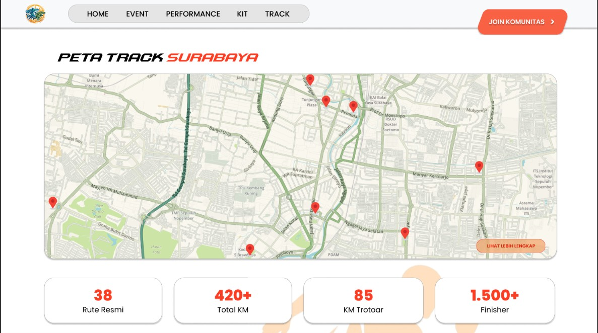
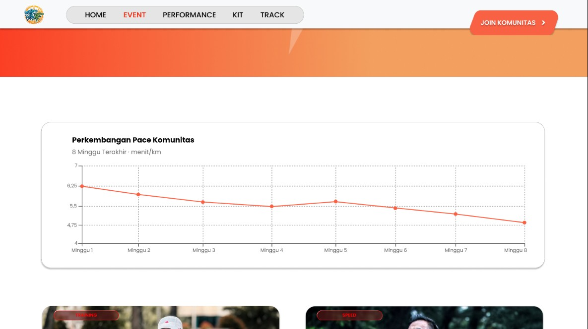
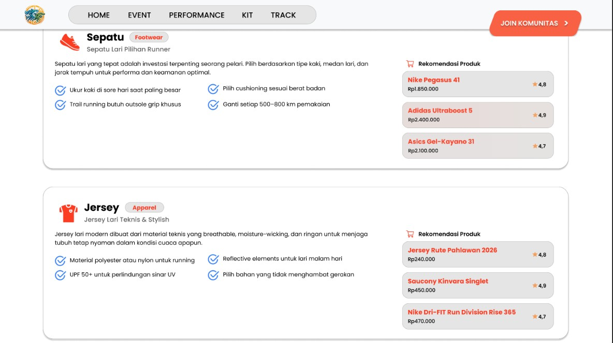

STORY OF THIS PROJECT

Rute Pahlawan adalah proyek UTS mata kuliah UI/UX yang mengangkat pengalaman berlari di Surabaya. Ide utamanya sederhana: membuat pelari bisa menemukan rute sekaligus mengenal kisah di balik tempat-tempat yang mereka lewati.

Halaman peta menjadi bagian utama untuk menjelajahi rute dan titik-titik menarik. Informasi jarak, lokasi, dan penanda disajikan langsung di atas peta agar pengguna dapat memahami perjalanan tanpa harus berpindah-pindah halaman.

Prototype juga menampilkan perkembangan pace komunitas dan rekomendasi perlengkapan lari. Kedua bagian ini melengkapi informasi rute dengan gambaran aktivitas dan kebutuhan pelari.
Melalui Rute Pahlawan, aktivitas lari menjadi cara untuk mengenal Surabaya lebih dekat, satu rute dan satu cerita dalam setiap perjalanan.